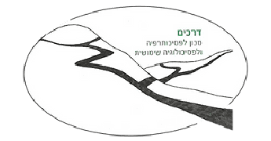
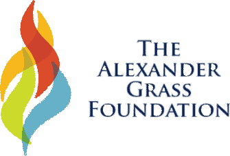
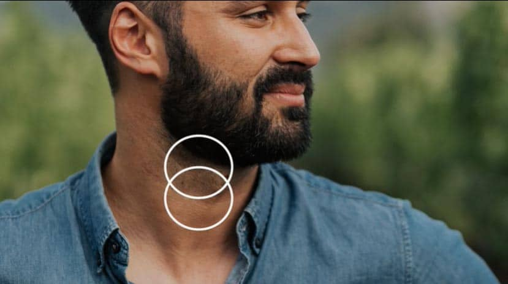

טיפול רפואי פורץ דרך להקלה על תסמיני הפרעת דחק פוסט טראומטית (PTSD) וחרדה
טראומה היא מורכבת ואין לה פתרון אחד ויחיד. ההליך הרפואי של Stella מאפשר הקלה משמעותית בסימפטומים הפיזיים של טראומה (קשיי שינה, עוררות יתר, חרדה ועוד) וניתן לשלבו עם טיפולים תומכים אחרים.
תורמים ושותפים לדרך


טראומה יוצרת מצב של עוררות יתר בתגובת "הילחם או ברח" במוח, ומעוררת סימפטומים פיזיים שמשבשים את איכות החיים ומקשים על התקדמות בטיפול. פיתחנו בסטלה הליך רפואי קצר שבסופו תוכלו להרגיש הקלה משמעותית בסימפטומים הפיזיים - הקלה שתאפשר לכם פסק זמן מהסטרס הקבוע ותעזור לכם להתמיד ולהתקדם בטיפולים נוספים.
הטיפול של סטלה נקרא בלוק עצבי, או SGB, והוא הליך קצר הכולל שתי זריקות של חומרי הרדמה מקומיים בצידי הצוואר. הזריקות נעשות על ידי רופא מוסמך באזור המכיל ריכוזי עצבים האחראים על תגובת "הילחם או ברח".
ההליך מבצע מעין "אתחול" והנעה מחדש של מערכת "הילחם או ברח", ולמעשה משחרר אתכם ממצב "הילחם". הטיפול מוביל לתחושה מיידית של רגיעה ומפחית משמעותית תסמינים כמו בהלה, עוררות יתר, עצבנות וקשיי שינה.
* הטיפול מותנה בהצגת אבחנת פוסט טראומה / הפרעת חרדה ע"י רופא.

מעל ל-75% מהמטופלים בשיטת SGB מדווחים על הקלה משמעותית בתסמיני פוסט טראומה לאחר 2 טיפולים בלבד
השאירו פרטים, וצוות מתאמי הטיפולים שלנו יחזור אליכם בסודיות ובחינם לשיחת ייעוץ ראשונית, ללא כל התחייבות.
בסטלה כל הליך מתבצע על ידי רופאים מנוסים ותחת הנחיית אולטרסאונד, לדיוק ובטיחות מקסימליים - כדי שתוכלו להתמקד אך ורק בהחלמה שלכם.
הטיפולים שלנו מתקיימים במרכז הרפואי מדיקה, בית חולים אלישע בחיפה ובמרכז הרפואי מדיקה ברמת החייל בתל אביב - במסגרת רפואית מסודרת ומזמינה.
הקרן פועלת למען קהילות יהודיות בארצות הברית ובעולם, ומפעילה את קמפוס אלכסנדר גראס בפנסילבניה, המשמש כמרכז למפגש וללמידה משותפת.
אנו רואים ב-Alexander Grass Foundation שותף לדרך ולחזון, מודים ומברכים על עזרתו הנדיבה, ובטוחים כי באמצעותו נוכל להביא את בשורת הטיפול ב-SGB למאות אנשים נוספים ולהגדיל את האימפקט החיובי על חייהם של ישראלים הסובלים מ-PTSD.
בדיקת זכאות לסבסוד »למדו עוד על Stella ישראל ועל טיפול SGB בכתבות ומאמרים שהתפרסמו אודותינו בתקשורת.
מעל ל-75% מהמטופלים בשיטת SGB מדווחים על הקלה משמעותית בתסמיני פוסט טראומה לאחר 2 טיפולים בלבד, ומספרים שההקלה נשמרת למשך חודשים ארוכים. הקשיבו לסיפורים של המטופלים שלנו:
אם לא מצאתם תשובה לשאלה, או אם תרצו לדבר עם הצוות שלנו בסודיות ובחינם - השאירו פרטים בטופס שבעמוד.
תגובת "הילחם או ברח" (fight or flight) של הגוף מופעלת כאשר אנו חווים טראומה. לעיתים תגובה זו נשארת זמן רב לאחר האירוע הטראומטי, מה שעלול לגרום לתסמינים מתישים. הפעלת היתר מקושרת לאמיגדלה, אזור במוח המכונה גם "מרכז הפחד".
טיפול SGB הוא הזרקה של חומר הרדמה מקומי לתוך צרור עצבים בצוואר (שצורתו דומה לכוכב), המסייע בהחזרת התפקוד הביולוגי לרמתו התקינה ויכול להקל ביעילות אפילו על תסמיני הטראומה החמורים ביותר. כל ההליך לוקח פחות מ-20 דקות. מעל 75% ממטופלי סטלה דיווחו על הקלה מתמשכת מתסמיני הטראומה שלהם לאחר הטיפול.
לפני ההליך, צוות מתאמי הטיפולים שלנו יסקור את הסימפטומים וההיסטוריה הרפואית שלך כדי לקבוע אם אתה מתאים לטיפול SGB. הטיפולים מתקיימים במרכז הרפואי מדיקה, בית חולים אלישע בחיפה, ובמרכז הרפואי מדיקה ברמת החייל בתל אביב.
תפגשו את ד"ר ג'ייסון כהן, המנהל הרפואי של סטלה ישראל, שיבצע 2 זריקות של חומר הרדמה מקומי באזור הצוואר תחת שיקוף לבטיחות מקסימלית. לאחר התאוששות קצרה של כ-20 דקות תוכלו לחזור הביתה. אנו ממליצים לנוח ולהימנע ממאמץ במהלך 24 השעות הראשונות.
אנו בסטלה מאמינים בשקיפות של תוצאות הטיפול. בעוד שבשום הליך רפואי הצלחה של 100% אינה מובטחת, SGB של סטלה עזר לאלפי מטופלים למצוא הקלה מתמשכת מתסמינים הקשורים לטראומה.
במחקר של 327 מטופלי סטלה שקיבלו SGB בין דצמבר 2016 לפברואר 2020, בממוצע למעלה מ-75% דיווחו על ירידה של 28.9 נקודות בציון ה-PCL שלהם (מדד תסמיני PTSD) - תוצאה טובה יותר כמעט פי שלושה מזו של טיפולים אחרים. למחקרים הקליניים »
תופעות לוואי חמורות נדירות ביותר (1 מתוך 10,000) מכיוון שאנו דורשים שהפרוצדורה תהיה מונחית תמונה. לאחר טיפול SGB, מטופלים חווים באופן זמני תסמינים שונים בצד הזריקה כולל עין אדומה ונפולה, חום בפנים ובזרועות ואף סתום.
בדרך כלל התסמינים נמשכים 6-8 שעות, אך במקרים מסוימים עד 24 שעות. כמעט מחצית ממטופלי סטלה חווים צרידות או בעיות בליעה שחולפות תוך 24 שעות מהתהליך.
עלות שני הטיפולים שבפרוטוקול באופן פרטי הינה כ-8,000 ש"ח. ישנם מסלולי סבסוד שמכסים עד כ-50% מעלות הטיפול, לפי עמידה בקריטריונים עליהם נרחיב בשיחה.
SGB יכול לעבוד היטב בשילוב עם טיפולים אחרים. לאחר הטיפול, מטופלי סטלה רבים חשים תחושת רוגע חדשה שיכולה להאיץ את ההשפעה החיובית של הטיפולים הקיימים (טיפול פסיכולוגי, EMDR, CBT, DBT וכו').
אם כבר יש לך מטפל בריאות הנפש, אנו מציעים להמשיך לעבוד איתו גם לאחר הטיפול ב-SGB. אם אין לך מטפל, ייתכן שסטלה תוכל להפנות אותך לאחד.
אם לא מצאת תשובה לשאלה שאתה מחפש, או אם תרצה לדבר עם הצוות שלנו בסודיות ובחינם - השאירו פרטים ונחזור אליכם.
חזרו אליי עם פרטים »בדקו את התאמתכם לטיפול בשאלון אנונימי קצר.
לבדיקת התאמה לטיפול »